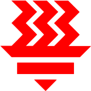
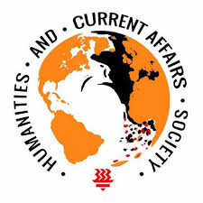

—
Education
—
-
2024
National University of Singapore
Computer Science
-
Tembusu College
-
-
2022
Singapore Armed Forces
Signals Institute
Served my mandatory National Service Obligations as a Signal Operator.
-
Lancer Overseas Training Base
Spent 1.5 years as a permanent staff in Lancer, Brunei Darusalaam. Supported both combat radio communications for training, and HQ Operations.
• Installed and maintained a host of networking hardware and software, upgraded camp-wide IT infrastructure leading to a 200% increase in broadband coverage
• Developed a custom Excel macro and database system to streamline administrative forms for diplomatic bags, improving workflow by reducing processing time by 50% and eliminating human error
• Operated critical radio equipment for 15 high-risk missions, provided real-time updates to senior management to conduct exercises
• Facilitated flow of critical information amongst army and air force commanders in emergency situations, leading to helicopter search-and-rescue of five cadets
• Led a team of 6 to provide technical and multimedia support for a diplomatic event with 700 attendees, including foreign ministers and defence attachés of 11 countries
-
Signals Institute
-
-
2020
Hwa Chong Institution
Singapore-Cambridge GCE A-Level 90 RP + H3 Chem Merit
-

Science Math Talent Programme (SMTP)
The Hwa Chong Science and Math Talent Programme (SMTP) is HCI's in-house special programme for high ability students with a passion for Science and Mathematics. Hwa Chong SMTP Programme aims to: ● provide an integrated and enriched curriculum which caters for high ability Science/ Mathematics students; ● provide a stimulating environment that nurtures the independent and inquisitive learner; and ● create opportunities for passion-focused activities, higherlevel academic pursuits and other scholastic endeavours. ● develop learners who can communicate confidently and think critically
-
Students' Science Research Club (SSRC)
ACTIVITIES-IN-CHARGE
In charge of SSRC major activities such as Science Sharing, Interest Groups and Science Game Show. Continually planned and explore new SSRC activities to engage the members. Allocated manpower, procured logistics and drafted action plans to ensure smooth running of SSRC events.
-
International Science Youth Festival (ISYF)
DIALOGUES AND DISCUSSIONS (DnD) Head
The International Science Youth Festival (ISYF) is a prestigious science and research fair attended by hundreds of delegates and top science students across the world. In 2021, I hosted Nobel Laureate Sir Konstantin Novoselov in the ISYF Grand Ceremony in a plenary panel discussion on his research work, and the latest trends in material science. I also trained and led the Dialogues & Discussions team in the art of hosting talks by esteemed scientists and researchers.
-
Centre for Science Research & Talent Development (CENTAD)
Member
Assisted researchers from NUS in a project titled “ Nano-enhanced microencapsulated phase change materials for passive cooling in tropical Singapore” I did a literature review and presentation materials for exhibition in the CENTAD conference. Learnt to read and analyse research papers to find and compile important research findings.
-

Humanities & Current Affairs Society (HACAS)
Member
Engages in training sessions, and participated in delegations to Model United Nations Conferences.
-
Hwa Chong Conflict Resolution & Inquiry (HCCRI)
Under-Secretary-General of Administration
HCCRI is HCI's flagship Model UN conference. I processed hundreds of delegate applications, responded to queries, managed the budget, and made the website.
-
-
2016

Bukit Panjang Government High School
Singapore-Cambridge GCE O-Level L1R5: 2 (6 raw)
-
Science Society: Science Quiz
UNIT HEAD
Planned lessons, activities , practical experiments and games for the unit for enrichment in Science. Liaised with external tutors to come in to help with the lessons. Managed the planning of sending school delegations to Science competitions, and provided training to CCA Members. Involved in the planning, logistics and execution for the Science Team SIA Scientific Outreach Project, where we went to external beneficiaries (Primary schools), to conduct a large-scale Science Fair for the younger kids. Won the CCA Active Participation Award, recognized by the school as most active member of Science Team.
-
Model United Nations Interest Group
VICE-CHAIRPERSON
Involved in the planning and liaising with external Model UN conference hosts to send school delegations to participate in Model UN conferences. Conduct Model UN training workshops for my school.
-
Humanities Interest Group
Member
Assisted in the communication between Teacher IC and students in the planning of outings and meetings.
-
Global Scholars Programme
CHAIRPERSON
Was selected by the school to take part in the Global Scholars Initiative launched by Global Cities Inc., New York, which included workshops to learn more about global affairs and evolving global trends in science and technology, with the opportunity to connect and discuss with students worldwide online. Led a Student-Initiated-Activity (SIA) project in conjuction with the Global Scholars Programme called CourteoUS to produce a series of videos (with other members in acting or filming roles) displaying simple acts of courtesy in various situations and encouraging others to be more courteous in their daily lives.
-